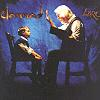

Celtic Lyrics Corner > Artists & Groups > Clannad > Lore > Trail Of Tears
|  | Trail Of Tears |
| Credits : | Noel Duggan |
| Appears On : | Lore ; Live In Concert |
| Language : | English |
Lyrics :
The sunrise above them
As they make their way
In the early morning light
No backward glance
Frightened of tomorrow
On a lonely road
Shrouded in misted rain
The vanquished race
Chorus
:
They felt the touch of loneliness
They felt the dread of fear
And found the path of wisdom
Along the trail of tears
So many ways of falling
A thousand barefoot tribes
Who trusted promises
No resting place
March into the wilderness
Time their fate decides
Leaving behind them
Treasures and gold
(Chorus)
The sun sets before them
In another land
Withered in spirit
The struggle ends
(Chorus 2x)